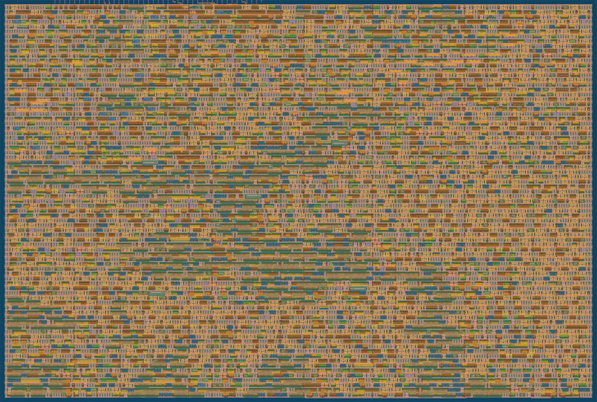

Meta AI Developer Hackathon · Indie track
SiliconMind
Muse Spark designs the accumulator of a 4-bit (NVFP4) AI chip. Every candidate is checked by running Llama on a bit-exact model of that chip, synthesizing its Verilog, and verifying the Verilog against an exact reference. The design it found is about half the size of a full-precision accumulator and loses no measurable accuracy.
Shrink the chip, watch the model
Each answer was generated by Llama-3.2-1B-Instruct with every matrix multiply in its decoder computed by the chip design on the left, bit for bit. Greedy decoding is chaotic: any change in rounding, even a harmless one, sends the answer down a different path, so wording (and a 1B model's shaky arithmetic) varies even between good designs. Perplexity over 32k held-out tokens is the measurement; truncation shows what real damage looks like.
Highlighted words differ from the full-size chip's answer.
Watch Muse Spark design it
The agent gets three tools: Llama accuracy on the emulated chip (expensive, 10 calls allowed), Yosys synthesis, and RTL verification (both cheap). After every round it also sees the plot below as an image.
Did it find the best design?
Bit-exact from arithmetic to silicon
The accuracy numbers mean something only if the chip that gets built computes exactly what Llama was tested on. Every link in this chain is checked bit for bit.
1 · Exact reference
The accumulator spec written with Python fractions: NVFP4 block products, then two roundings with P and Q bits.
2 · GPU emulator
Float64 bit-mask rounding on the GPU runs the whole Llama model on the candidate chip.
3 · Verilog RTL
One parameterized design for any P, Q and rounding mode, simulated with Icarus Verilog.
4 · Silicon
Yosys synthesizes all 600 designs to CMOS gates; the chosen design goes through the sky130 flow.
